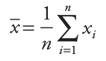
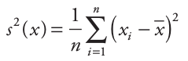
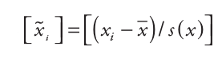
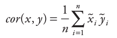
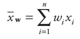
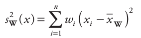
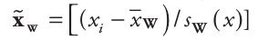
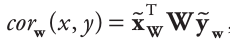
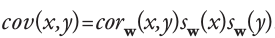

Mean : 
Variance : 
Standardization : 
Correlation : 
Weighted mean :  if weights sum to 1
Weighted variance :  if weights sum to 1
Weighted standardization : 
Weighted correlation : 
Weighted covariance : 
with :
xi = trait value of species iwi = abundance of species in = total number of speciesCommunity Weighted Mean correlation : correlation between CWM values and environmental values (non-weighted by species’ abundances) for all community sites
with :
xi = environmental value of site iwi = abundance of species in site in = total number of community sitesSpecies Niche Centroid correlation : correlation between SNC values and trait values (non-weighted by species’ abundances) for all species
| CWM, SNC correlations | 4th-corner correlation |
|---|---|
| divide by mean variation | divide by total trait variation |
Maximum (4th-corner correlation) :
Chessel fourth-corner correlation : 4th-corner correlation / max(4th-corner correlation)
CWM / SNC are based on weighted averages : ignore trait variation among species within communities
(i.e. within-community component)
Usually, CWM is used to assess among-community component, and average trait distance (e.g. MPD) to asses within-community component. But they are not additive : they do not sum up to total variation.
New solution for within-community component :
with :
alpha i = abundance weight of site i
lij = abundance of species j in site i
SUM lij = abundance of species in site i
tj = trait value of species j
ci = CWM value of site i